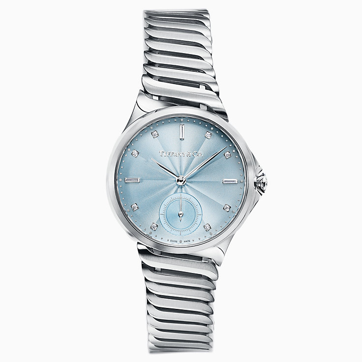

COLLANA CON PENDENTE
Lunghezza catena: 450 MM
Descrizione e Dettagli
La collezione Tiffany 1837™, che, con orgoglio, reca inciso l'anno di fondazione di Tiffany, è caratterizzata da linee fluide ed eleganti. Una coppia di cerchi intrecciati aggiunge un tocco moderno in ogni occasione.
Argento
Misura piccola
Prezzo €350

OROLOGIO A 3 SFERE, 34 mm
Descrizione e Dettagli
Orologio in acciaio inossidabile. Quadrante laccato bianco con finitura flinqué, contatore dei secondi con finitura azuré, minuteria poudré in argento, con 8 indici con diamanti taglio brillante e 3 indici con diamanti taglio baguette. Cassa da 34 mm con corona in acciaio inossidabile con diamanti taglio brillante e diamante con numero di serie unico. Movimento meccanico a carica automatica. Riserva di carica di 42 ore. Resistente all’acqua fino a 50 metri/5 ATM. Swiss Made. Caratura totale 1,39.
Prezzo €10.600
TORNA ALLA HOME
TORNA A PAGINA PRECEDENTE
VAI ALLA PAGINA SUCCESSIVA